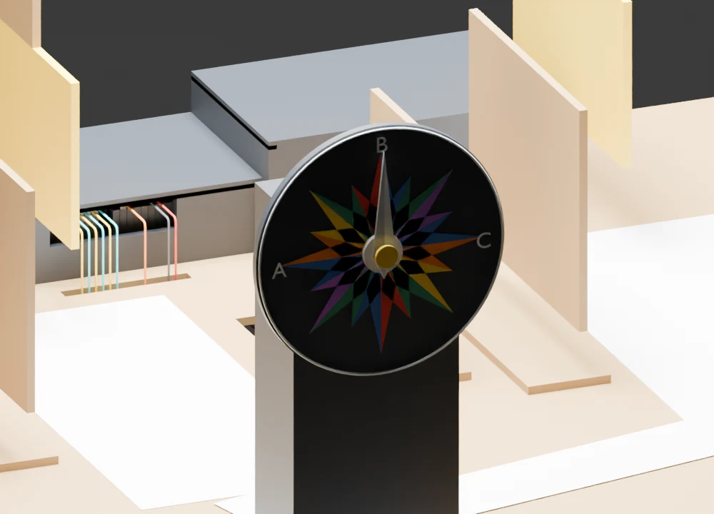

Bússola de Fluxo Urbano
Projetos I, CESAR School, 2026. Lidero a equipe de oito pessoas.Projects I, CESAR School, 2026. I lead the eight-person team.
Sensores ultrassônicos contam quantas vezes alguém passa por cada uma de três rotas. A cada 10 segundos, um ponteiro gira e aponta a rota mais movimentada.Ultrasonic sensors count how many times someone passes along each of three routes. Every 10 seconds, a pointer turns toward the busiest one.
Lidero o grupo e conduzo o projeto do começo ao fim, da pesquisa à maquete, ao código e às apresentações, junto com uma equipe que divide comigo cada entrega.I lead the group and drive the project from start to finish, from research to the physical model, the code and the presentations, with a team that shares each delivery with me.
Uma unidade do sensor já funcionou no teste real; a montagem completa será testada antes da entrega final, em 11 de dezembro.One sensor unit already works on real hardware; the full build will be tested before the final delivery on December 11.
